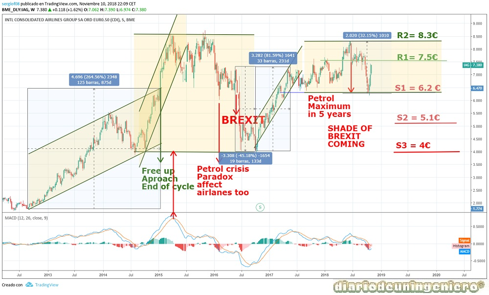
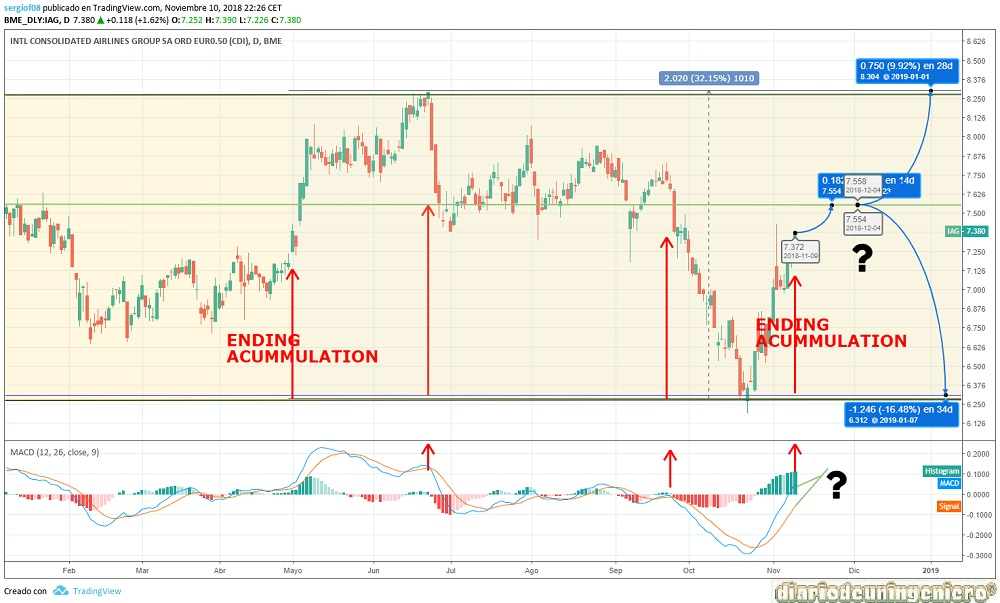

IAG es la única empresa de transportes del IBEX35 y se compone de la fusión de tres aerolíneas. Dos españolas como son IBERIA y Vueling y otra británica que es British Airways. La empresa actualmente goza de una muy buena salud financiera tras la restructuración en 2011. Cada año los beneficios han aumentado, habiéndolo hecho de una manera espectacular en los últimos cuatro años. Con incrementos que van desde el 10% al 50% anual, habiendo pasado de 800 millones en 2014 a casi 2500 en 2018, es decir, multiplicando por cinco su valor.
El EBDITA ha aumentado también habiéndose doblado en 4 años. La deuda a su vez ha sido reducida en un 15% pero lo que es más importante es que al haberse generado mucho más beneficio esa deuda ahora es residual y es fácilmente abonable. Comparando el EBDITA con la deuda nos sale un ratio muy bajo, en torno a 0,3 que podría ser la envidia de muchas empresas del selectivo como Telefónica.
Si nos vamos al plano del futuro la empresa cuenta con muy buena fortaleza financiera y muy bien posicionada frente a sus rivales en cuanto a aeropuertos donde opera. En los últimos tiempos se ha revelado la intención de la compra de Norwegian, cosa que ha hecho disparar la cotización de esta última. De consumarse sería muy buena noticia para IAG. Además se está empezando a ejecutar un plan de líneas regulares de bajo coste transatlánticas, que pudiera ofrecer billetes a buen precio para conectar sobre todo Estados Unidos y España o Sudamérica y España a unos precios más bajos. Sin embargo debido al monopolio que presenta en Sudamérica en algunos países veo más factible que esto se ponga a la práctica antes con Estados Unidos ya que allí cuenta con más rivales.
Como dudas presentes en el valor está el Brexit que aun siendo ya iniciado las dudas sobre la ejecución son diversas y no creo que este todo claro hasta por lo menos el 2020.
A continuación presento los datos de fundamentales que me parecen más importantes:
| ### | 2014 | 2015 | 2016 | 2017 | 2018 |
|---|---|---|---|---|---|
| Deuda/ Caja empresa | Deuda Total (M) | 1.673 | 1.453 | 2.293 | 1.662 | 1.359 |
| Beneficio/valor acción | |||||
| Capitalización(M) | - | 12.628 | 16.881 | 10.940 | 15.434 |
| EBDITA (M) | 2.586 | 3.642 | 3.822 | 4.199 | 4.434 |
| PER | 18,45 | 10,11 | 8,89 | 9,11 | 8,58 |
| Beneficio Neto (M) | 797 | 1.495 | 1.952 | 2.021 | 2.406 |
| Dividendo | - | 0.20 | 0,24 | 0,27 | 0,29 |
| Rentabilidad por acción | - | 2,71% | 3,18% | 3,66% | 3,98% |
| Deuda/EBDITA | 0,64 | 0,39 | 0,6 | 0,39 | 0,306 |
Atendiendo al gráfico de largo plazo observamos las diferentes fases en las que se ha movido IAG.
La primera fase sería un ciclo de rebote alista sobre la crisis que aconteció en la compañía y en parte del IBEX35 en 2012. En ella se ve como esa subida en su punto más alto llego a un 256% de rentabilidad sobre los mínimos de 1,8€. Después haría una corrección para completar la madurez y la acomodación del valor llegando a los 8€. Esa subida tan vertical vino de la mano de los nuevos resultados de IAG Express, la sección de IAG de vuelos de bajo coste que iban a competir con aerolíneas como Rayanair y EasyJet. A partir de aquí en 2015 el precio subiría influido por la bajada del precio del petróleo.
Tendría una bajada primaria de corrección debido a la fuerte subida experimentada y ahí quedaría a expensas del resultado del Brexit que según muchos analistas supondría un antes y un después. El Brexit saldría un resultado no esperado y como consecuencia el valor sería fuertemente castigado dejándose casi un 40% de la cotización del valor, pasando de 7€ a 5€ en la primera jornada tras el Brexit y llegando a los 4€ en la segunda siendo el valor más castigado del IBEX35.
A partir de aquí comenzaría a subir lentamente y en menos de 1 año recobraría casi su valor original antes del Brexit, subiendo casi un 85% desde mínimos. Una compañía que funcionaba tan bien no iba a perder esos valores por tan solo un resultado político. Visto lo visto el Brexit ha durado casi dos años sin aplicación y sin un horizonte claro y en ese tiempo no ha habido ningún cambio reseñable a nivel de funcionamiento de la empresa, por lo cual no fue todo más que un buen momento para intercambiar cromos y entrar en el valor.
A partir de aquí el valor ha estado oscilando entre el soporte de 6 € y los máximos anteriores, 8,3€ que corresponden al techo de la cotización.
A nivel global el técnico no pinta demasiado bien a largo plazo, mientras que no dé señales de una salida del canal.

Si nos fijamos en el gráfico de corto plazo observamos que desde finales de Agosto la cotización ha entrado en bajada debido a la subida del crudo y ha rebotado en el soporte histórico de los 6,2€.
En este momento sería mucho más precavido esperar a posibles caídas del valor entorno al soporte anterior ya que el riesgo a una caída es elevado y la posibilidad de escalar al techo son escasas, habiendo tan sólo un 10% de subida en máximos.

© 2016 - All Rights Reserved - Diseñada por Sergio López Martínez
![[Valid RSS]](https://www.feedvalidator.org/images/valid-rss-rogers.png "Validate my RSS feed")